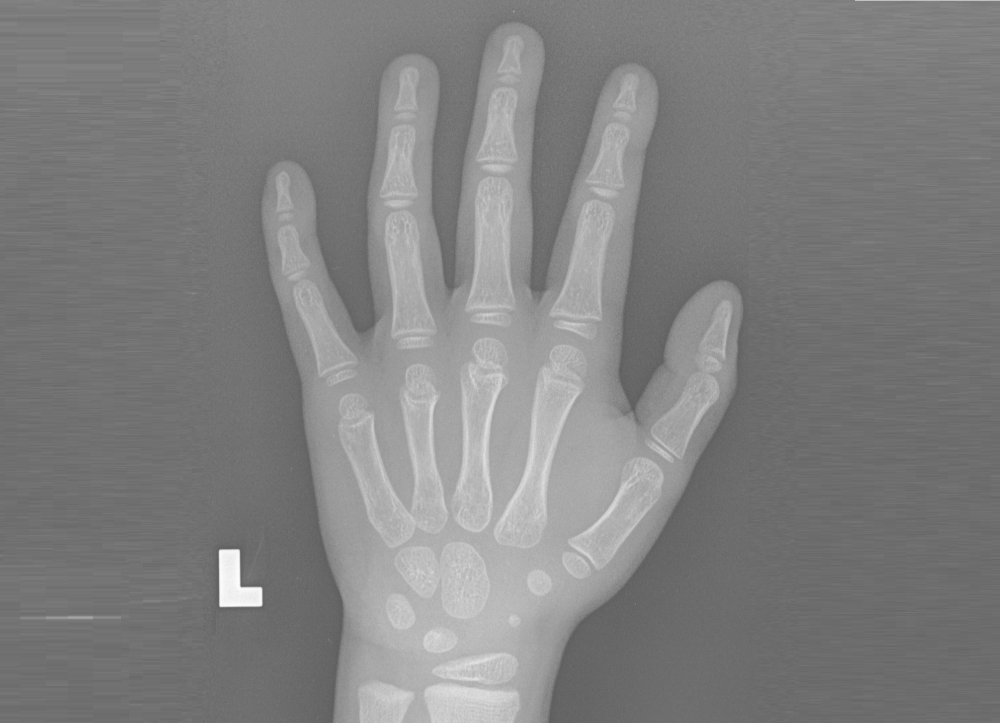
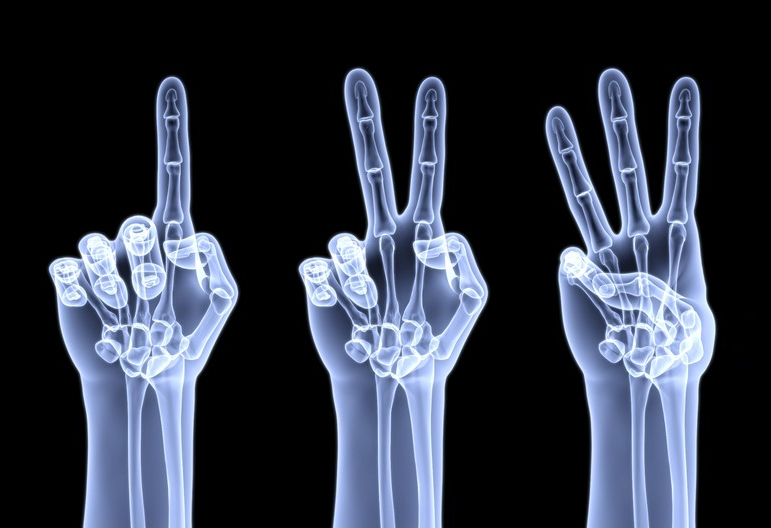

English
骨齡預測分析首頁
開始
為什麼我們需要知道這些？

測骨齡的方式
俗稱的「測骨齡」或「照骨齡」，就是照一張左手掌的X光。透過這張X光，少數受過專業訓練的醫師，能藉此判斷骨頭的成熟度，估計整體骨頭的年紀，也就是「骨齡」。
用骨齡評估生長發育的原理
人類掌骨、指骨隨年紀的變化，都是可以預測的，所以，這些骨頭在X光下，「出現的時間與位置」、「形狀與大小的變化」、「與周邊骨頭的關聯性」就成為醫生用來判斷骨骼成熟度的依據。

什麼時候要照骨齡？
孩子的成長與發育不如預期，無論是長得太高、太矮，或是發育得太早、太晚，就是照骨齡的時機。
隔多久測一次骨齡？
半年測一次骨齡，剛剛好！由於骨齡的計算很仰賴手部骨骼「隨著時間的變化」，兩次照骨齡時間若相隔太近，骨骼沒什麼變化。若相隔太久，又怕骨齡變化超出預期。
骨齡如何預測?
判斷位置包括從手掌及手腕的X光上，依序看腕骨的發育及其大小，手掌骨、手指骨的生長板是否開始閉合，以及遠端橈骨處的生長板是否還在。
還想知道更詳細的資訊？
現在就開始你的搜索吧！
開始